การเขียนโปรแกรม STM32F4 โดยใช้ VS Code IDE + PlatformIO และ Arduino#
Keywords: STM32F4, BlackPill Boards, Arduino, STM32duino, FreeRTOS, VS Code IDEI, PlatformIO (PIO)
▷ บอร์ดไมโครคอนโทรลเลอร์ STM32F4#
บอร์ดไมโครคอนโทรลเลอร์ WeAct Studio BlackPill มีชิป STM32F401 หรือ STM32F411 เป็นตัวประมวลผลหลัก โดยทั่วไป ผู้ใช้สามารถเขียนโปรแกรมด้วยภาษา C/C++ และเลือกใช้ไลบรารีของบริษัท STMicroelectronics เช่น STM32F4 HAL (Hardware Abstraction Layer) รวมถึงมีซอฟต์แวร์ประเภท IDE ให้เลือกใช้ได้ เช่น STM32CubeIDE อย่างไรก็ตาม ในปัจจุบันการเขียนโปรแกรมสำหรับ STM32 สามารถทำได้ง่ายขึ้น โดยใช้ Arduino API และ STM32duino (Arduino Core for STM32) เป็นพื้นฐานในการเขียนโค้ด
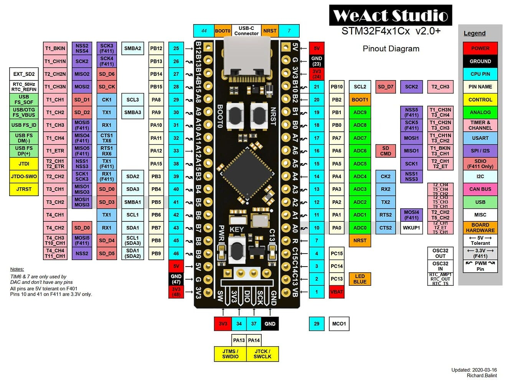
รูป: PinMap ของบอร์ด STM32F411CEU BlackPill
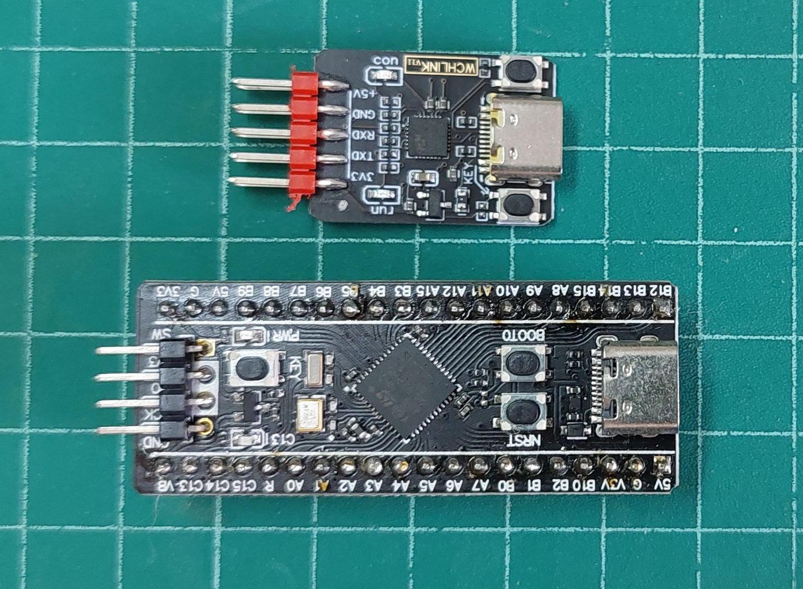
รูป: อุปกรณ์ที่ได้นำมาลองใช้งาน WeAct Studio BlackPill (STM32F411CEU) และ WCH-Link Mini CH549F (DAPLink)
แนะนำให้ศึกษาบทความที่เกี่ยวข้อง:
- "แนะนำการใช้งานบอร์ดไมโครคอนโทรลเลอร์ STM32F4x1 BlackPill"
- "การเขียนโปรแกรม Arduino สำหรับบอร์ด STM32 Nucleo (NUCLEO-L432KC)"
- "แนะนำการเขียนโค้ดสำหรับบอร์ด STM32F411CE BlackPill ด้วย STM32duino และ FreeRTOS"
▷ การเริ่มต้นใช้งาน VS Code IDE#
เริ่มต้นด้วยติดตั้งซอฟต์แวร์ VS Code IDE (ในบทความนี้ได้ทดลองใช้กับระบบปฏิบัติการ Windows) แล้วติดตั้ง PlatformIO (PIO) extension จากนั้นให้เปิด VS Code IDE เพื่อใช้งาน แถบทางซ้ายมือจะมีไอคอนของ PIO เมื่อคลิกแล้วจะเปิดไปยังหน้า PIO Home และสามารถสร้างโปรเจกต์ใหม่ได้ตามตัวอย่าง
ในหน้าต่าง Project Wizard ในช่อง Name ให้ระบุชื่อโปรเจกต์ ในช่อง Board ให้เลือกบอร์ด WeAct Studio BlackPill V2.0 STM32F411CE) และในช่อง Framework ให้เลือก Arduino Framwork
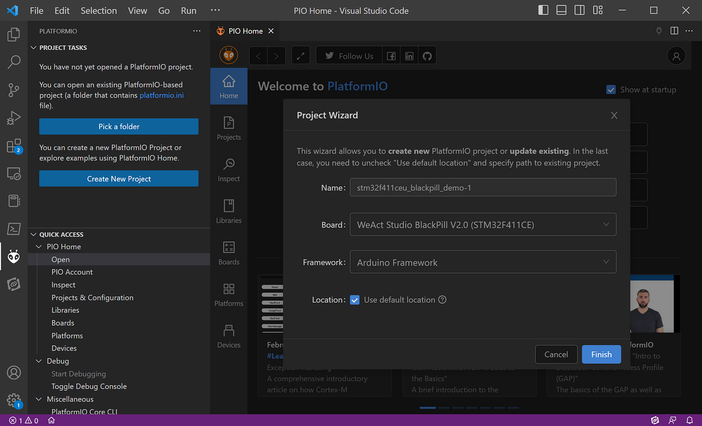
รูป: เริ่มต้นสร้างโปรเจกต์ใหม่
เมื่อได้สร้างโปรเจกต์ใหม่แล้ว จะมีไฟล์ main.cpp ใส่มาในโปรเจกต์ให้แล้ว
ลองเปิดและแก้ไข ให้เขียนโค้ดตามตัวอย่าง ซึ่งสาธิตการทำให้ Onboard LED
ที่ขา PC13 กระพริบ และมีการส่งข้อความผ่านช่องทาง
Serial1 (RX=PB7, TX=PB6) และ Serial (USBSerial)
ในขณะที่โปรแกรมทำงาน
#include <Arduino.h>
#define LED_PIN PC13 // onboard LED
void setup() {
pinMode( LED_PIN, OUTPUT );
Serial1.setRx(PB7);
Serial1.setTx(PB6);
Serial1.begin(115200);
Serial1.printf("Serial1 - Hello World!\r\n");
#ifdef USBCON
Serial.begin(115200);
while(!Serial);
Serial.printf("USB CDC - Hello World!\r\n");
#endif
}
void loop() {
static uint32_t state = 0;
// Toggle the LED state and update the LED output pin.
digitalWrite( LED_PIN, state ^= 1 );
#ifdef USBCON
Serial.printf("LED State: %u\r\n", state );
#else
Serial1.printf("LED State: %u\r\n", state );
#endif
// Wait for some delay before re-entering the loop function.
delay(500);
}
แถบเครื่องมือด้านล่างของ VS Code - PIO จะมีไอคอนให้คลิกทำคำสั่งได้สะดวก เช่น Build และ Upload
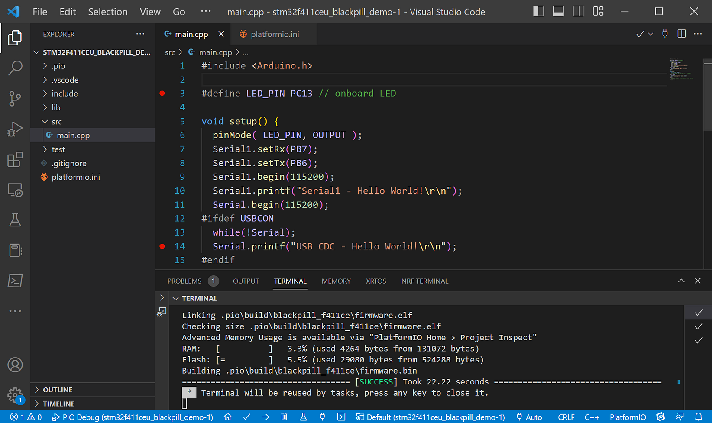
รูป: ตัวอย่างการทำขั้นตอน Build Project
เมื่อคอมไพล์โค้ดในขั้นตอน Build ได้สำเร็จแล้ว ซึ่งจะได้ไฟล์เฟิร์มแวร์ชื่อ firmware.bin
ขั้นตอนถัดไป ให้แก้ไขไฟล์ platformio.ini ในไดเรกทอรีของโปรเจกต์ ดังนี้
จากนั้นลองทำขั้นตอน Build ใหม่อีกครั้ง
[env:blackpill_f411ce]
platform = ststm32
board = blackpill_f411ce
framework = arduino
; set build flags (for debug)
build_flags =
-ggdb
-D PIO_FRAMEWORK_ARDUINO_ENABLE_CDC
-D USBCON
; set the debug tool
debug_tool = cmsis-dap
; set the CMSIS-DAP adapter speed (kHz)
debug_speed = 1000
; set the serial baudrate
monitor_speed = 115200
; select the upload protocol: dfu, stlink or cmsis-dap
;upload_protocol = dfu
;upload_protocol = stlink
upload_protocol = cmsis-dap
upload_flags =
-c
reset_config none
การอัปโหลดไฟล์เฟิร์มแวร์ไปยังบอร์ด BlackPill ทำได้หลายวิธี ดังนี้
- DFU Bootloader: ใช้สาย Type-C USB เชื่อมต่อกับคอมพิวเตอร์ของผู้ใช้ ในกรณีนี้จะต้องกดปุ่ม BOOT0 ค้างไว้ แล้วกดปุ่มรีเซตแล้วปล่อย เพื่อทำให้ชิป STM32F4 เข้าสู่ DFU Bootloader Mode ก่อนอัปโหลดไฟล์เฟิร์มแวร์
- CMSIS-DAP: ใช้อุปกรณ์ CMSIS-DAP Compatible และเชื่อมต่อสายไปยังพอร์ต SWD ของบอร์ด
- ST-Link/v2: ใช้อุปกรณ์ ST-Link/v2 และเชื่อมต่อสายไปยังพอร์ต SWD ของบอร์ด
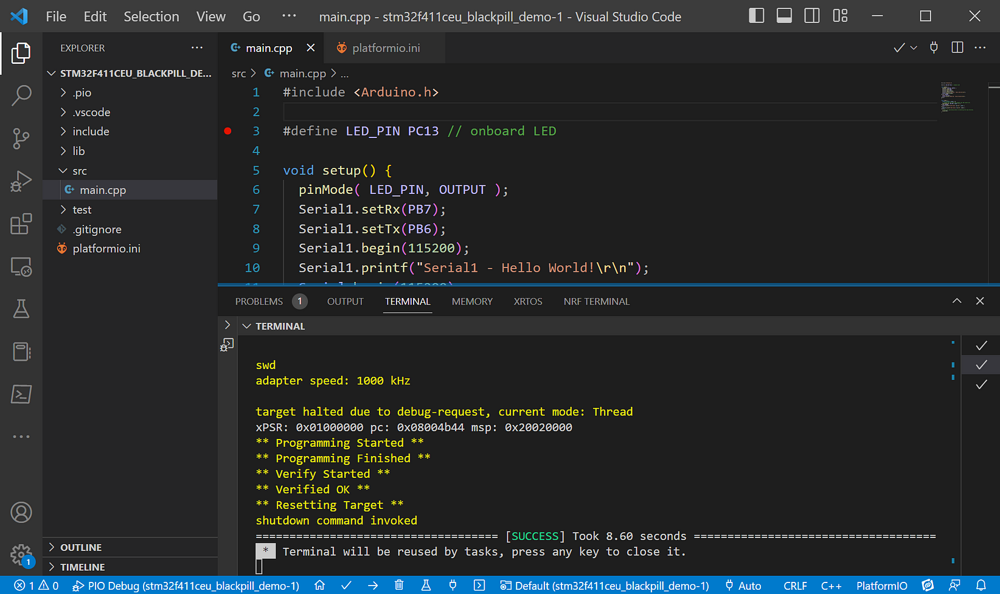
รูป: ตัวอย่างการอัปโหลดเฟิร์มแวร์ โดยใช้ CMSIS-DAP Compatible Adapter (ใช้ WCH-Link Mini-DAPLin)
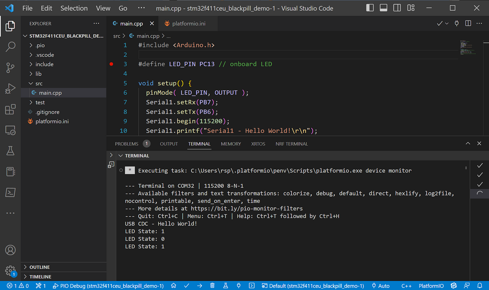
รูป: ตัวอย่างการเปิด Serial Monitor เพื่อรับข้อความจากบอร์ด BlackPill
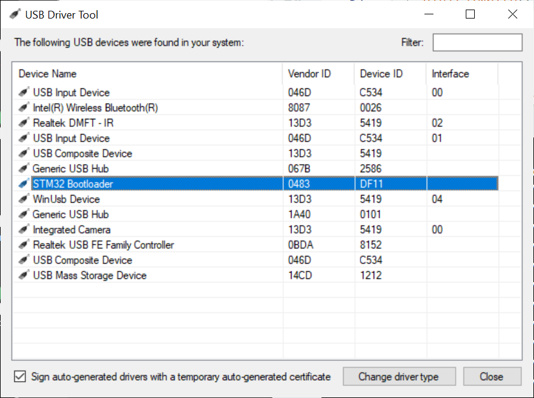
รูป: การตรวจสอบดูว่า บอร์ด BlackPill อยู่ในโหมด STM32 DFU แล้วหรือไม่ (สำหรับ Windows)
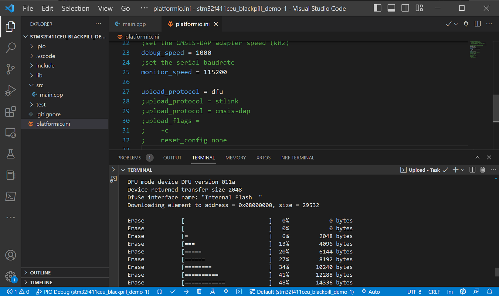
รูป: ตัวอย่างการอัปโหลดเฟิร์มแวร์ โดยใช้วิธี STM32 DFU Bootloader
ข้อสังเกตในการเชื่อมต่อบอร์ด BlackPill กับคอมพิวเตอร์ของผู้ใช้
- ในกรณีที่ใช้วิธี USB Bootloader ใช้สาย Type-C USB
เพียงเส้นเดียวเชื่อมต่อระหว่างคอมพิวเตอร์ของผู้ใช้กับบอร์ด BlackPill
บอร์ดจะได้แรงดันไฟเลี้ยง +5V ผ่านทางพอร์ต USB
ข้อความจาก
Serialจะส่งผ่าน USB CDC ทางพอร์ต USB แต่การอัปโหลดไฟล์เฟิร์มแวร์ ต้องมีการกดปุ่มบนบอร์ดเพื่อทำให้ชิปเข้าสู่โหมด STM32 DFU Boot ทุกครั้ง - ในกรณีที่ใช้ CMSIS-DAP Adapter หรือ ST-Link จะต้องใช้สายไฟเชื่อมต่อกับบอร์ดที่ขา SWD ได้แก่ +3.3V (ห้ามต่อ +5V), SWDIO, SWCLK และ GND แต่ถ้าจะใช้ USB CDC จะต้องใช้สาย USB อีกหนึ่งเส้น เชื่อมต่อกับพอร์ต USB ของคอมพิวเตอร์ผู้ใช้
- อุปกรณ์ CMSIS-DAP Adapter บางชนิด มีขา Tx/Rx เพิ่มมาให้ สามารถรับข้อความสำหรับ Serial ได้ นอกเหนือจากขาเชื่อมต่อสำหรับ SWD Interface
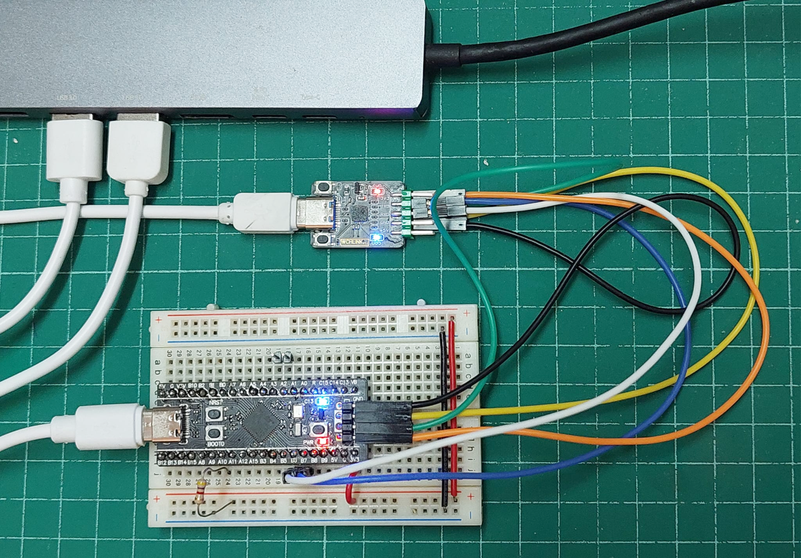
รูป: การใช้อุปกรณ์ CMSIS-DAP Adapter กับบอร์ด BlackPill และใช้สาย Type-C USB อีกหนึ่งเส้นเชื่อมกับบอร์ด
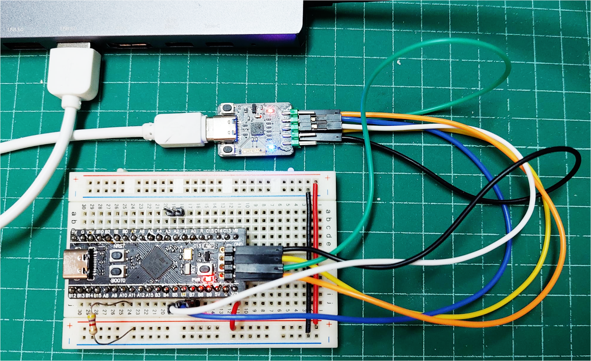
รูป: การใช้อุปกรณ์ CMSIS-DAP Adapter กับบอร์ด BlackPill (ใช้สายเชื่อมต่อกับ Type-C USB เพียงเส้นเดียวไปยังพอร์ต USB ของคอมพิวเตอร์ผู้ใช้)
▷ การดีบักโค้ดด้วยวิธี Source-Level On-Chip Debug#
ถ้าใช้อุปกรณ์อย่างเช่น CMSIS-DAP / DAPLink กับบอร์ด BlackPill นอกจากจะสามารถอัปโหลดไฟล์เฟิร์มแวร์ไปยังชิปเป้าหมายบนบอร์ดด้วยอุปกรณ์ดังกล่าวแล้ว ยังสามารถดีบักการทำงานของโปรแกรมของบอร์ดได้ด้วย ขั้นตอนนี้เรียกว่า Source-Level On-Chip Debug และ PIO Debug ก็รองรับรูปแบบการดีบักโค้ดด้วยอุปกรณ์ฮาร์ดแวร์
ในไฟล์ platformio.ini จะต้องตั้งค่าเพื่อเลือกใช้วิธีการและอุปกรณ์ให้ถูกต้องก่อน
; select the CMSIS-DAP as the debug tool
debug_tool = cmsis-dap
; set the CMSIS-DAP adapter speed (kHz)
debug_speed = 1000
upload_protocol = cmsis-dap
upload_flags =
-c
reset_config none
เมื่อกดปุ่ม PIO Debug จะเริ่มต้นเข้าสู่โหมดการดีบัก
ผู้ใช้สามารถกำหนดตำแหน่ง Breakpoint ในโค้ด main.cpp
เพื่อให้หยุดการทำงานชั่วคราวได้ในระหว่างการดีบัก
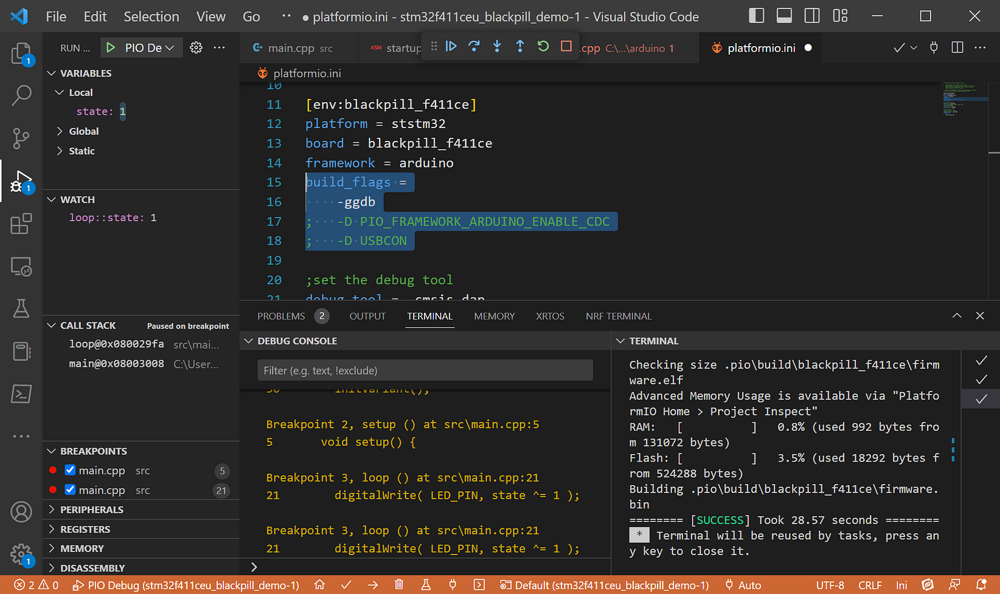
รูป: การปิดการใช้งาน USB CDC ของบอร์ด BlackPill เมื่อทำขั้นตอน PIO Debug
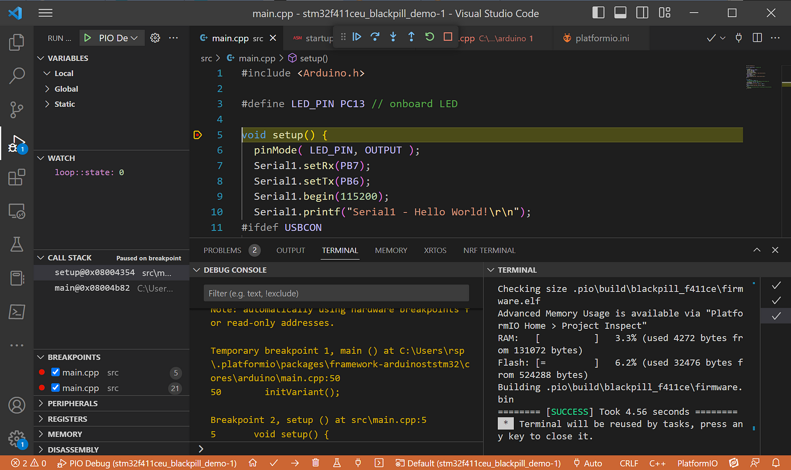
รูป: ตัวอย่างการทำขั้นตอน On-Chip Debug ด้วย PIO-Debug
และมีการกำหนดตำแหน่งหยุดชั่วคราวที่ฟังก์ชัน setup()
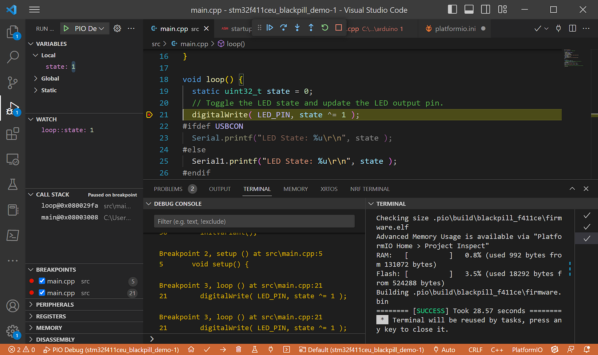
รูป: ตัวอย่างการกำหนดตำแหน่งหยุดชั่วคราวในฟังก์ชัน loop()
▷ การเขียนโค้ดด้วย FreeRTOS สำหรับ STM32F411#
ในไฟล์ platformio.ini ในส่วนที่มีชื่อว่า [env:blackpill_f411ce]
ให้เพิ่มข้อความต่อไปนี้ เพื่อระบุว่า ต้องการใช้งาน STM32duino FreeRTOS library
(เช่น เจาะจงใช้เวอร์ชัน v10.3.1) ต่อท้ายข้อความเดิมสำหรับการตั้งค่าใช้งานที่มีอยู่แล้ว
; add Arduino libraries
; https://github.com/stm32duino/STM32FreeRTOS/
lib_deps = STM32duino FreeRTOS@10.3.1
ตัวอย่างโค้ด
#include <Arduino.h>
#include <STM32FreeRTOS.h>
#define LED_PIN PC13 // onboard LED
static void task_func(void *pvParameters) {
static uint32_t state = 0;
for (;;) {
// Toggle the LED state and update the LED output pin.
digitalWrite( LED_PIN, state ^= 1 );
Serial1.printf("LED State: %u\r\n", state );
vTaskDelay(500);
}
}
void setup() {
pinMode(LED_PIN, OUTPUT);
Serial1.setRx(PB7);
Serial1.setTx(PB6);
Serial1.begin(115200);
xTaskCreate(task_func, "led_task", configMINIMAL_STACK_SIZE + 128, NULL,
tskIDLE_PRIORITY + 2, NULL);
vTaskStartScheduler();
while (1)
;
}
void loop() {
}
▷ กล่าวสรุป#
บทความนี้ได้นำเสนอการใช้งาน VS Code IDE ร่วมกับ Platform (PIO) Extension เพื่อใช้ในการเขียนโค้ด Arduino สำหรับบอร์ดไมโครคอนโทรลเลอร์ BlackPill (STM32F411) นอกจากนั้นยังได้สาธิตวิธีอัปโหลดไฟล์เฟิร์มแวร์ เช่น STM32 USB Boot Mode และการใช้อุปกรณ์ CMSIS-DAP Adapter สำหรับการดีบักโปรแกรมในฮาร์ดแวร์
This work is licensed under a Creative Commons Attribution-ShareAlike 4.0 International License.
Created: 2023-03-08 | Last Updated: 2023-03-08